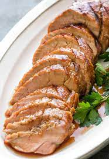

Grilled Pork Tenderloin

Description
A simple yet delicious meal! Serve with your favorite sides for a complete dinner!
Ingredients
- 1/3 cup soy sauce
- 1/3 cup orange marmalade
- 1 tbsp. and 1 tsp. rice wine vinegar
- Pinch of crushed red pepper flakes
- 1 lbs. pork tenderloin
- 2 scallions, thinly sliced
- Olive oil for grill
Steps
- Combine soy sauce, marmalade, honey, rice wine vinegar, and red pepper flakes in a small saucepan. Bring to a simmer over medium heat. Remove from heat and let cool.
- Marinate pork in half of the marinade for 1 hour. Save the rest for after cooking.
- While pork is marinating, prepare your grill for high direct heat on one side and low heat on the other.
- Remove pork from marinade and coat in olive oil. Place on hot side of grill with narrow end toward the cool side of grill. Grill until there are grill marks on one side then rotate to another side until it has grill marks. Continue until all sides are lighty seared.
- Move pork to low heat side of grill and cover. Cook until internal temp reaches 140 degrees. Remove from heat when finished cooking.
- Tent pork with foil and let rest for 10 minutes. Thinly slice, sprinkle with remaining glaze and scallions.